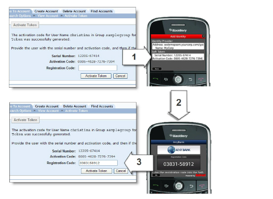

|
IdentityGuard Server 13.0 Administration Guide |
|
IdentityGuard Server 13.0 Administration Guide |
After users download the soft token application, they must activate the soft token. There are three ways to activate a soft token:
● through the Self-Service Module—see the Entrust IdentityGuard Self-Service Module Installation and Configuration Guide for details.
● through a custom interface—see the Entrust IdentityGuard Programming Guide for details on how to create a custom interface.
● through the Administration interface—help desk model, as shown in the following figure. For more information, see Creating and activating a mobile soft token using the Administration interface.
In all cases, a serial number, an activation code, and optionally, a URL, are required to activate the soft token.
With version 2.0 of the Entrust IdentityGuard Mobile ST app, this information is entered automatically if users have a an active data connection through a cellular data network or Wi-Fi. Users who do not have an active connection, or who have version 1.0 of the app, or who are using the Mac version of the desktop soft token application, must enter this information manually into the soft token. This generates a registration code. If the Transaction component was enabled during the installation of the Self-Service Module, the registration code is passed automatically to Entrust IdentityGuard, and the activation is completed without further user input. (In other words, step 3 in the following figure does not occur.) If the Transaction component was not enabled, the registration code is displayed on-screen in the soft token application, and users must manually enter this code into Self-Service or the Administration interface to complete the activation.
If use of a Personal Verification Number (PVN) is required by policy, the PVN is sent to the user.
As mentioned earlier, providing a URL is optional. If users do not enter a URL, then:
● there is no custom branding or colors
● the user must enter an Identity Provider name
● the registration code cannot be sent automatically to the soft token. Instead, it is displayed on-screen.
